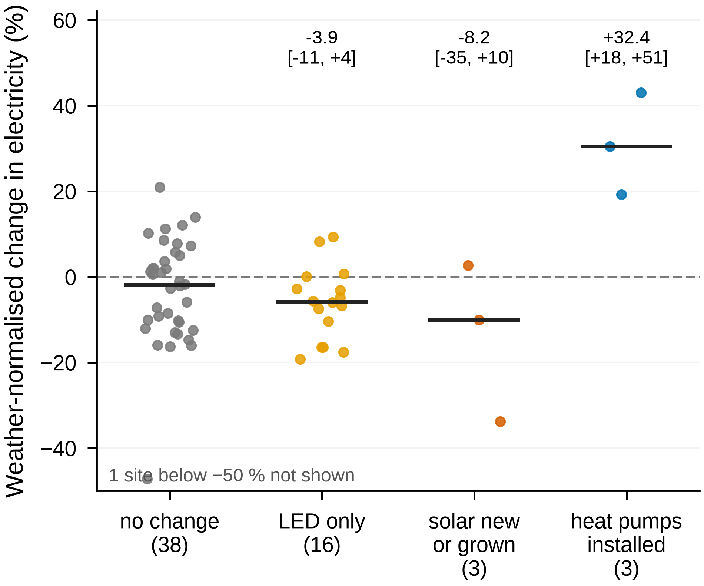
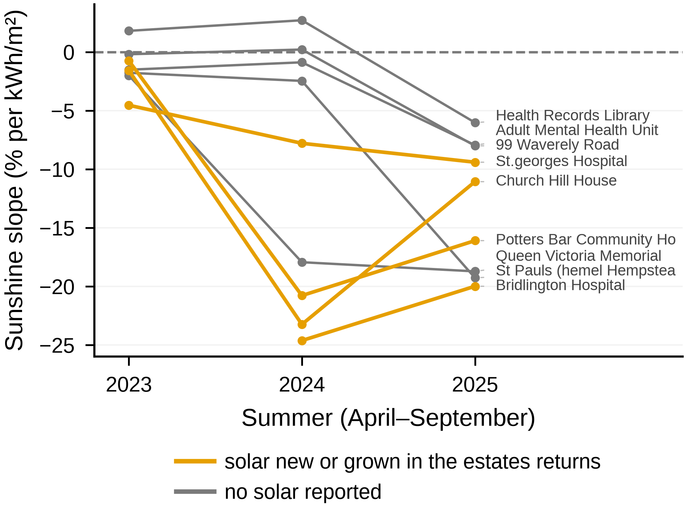

The weather-normalised estate: savings, warming, heatwaves, solar and CHP dispatch
Six questions answered with one engine, 9 November 2026. The engine is the site-level response
to weather by hour of the day (analysis/hourly_response.py): for every local hour, the hour's
demand regressed on site × (cold dose, heat dose, sunshine) interactions with site × year-month,
site × weekday and date effects, on the 83 sites without CHP or meter gaps, shrunk across sites
hour by hour. A site's demand in hour h under another temperature is the observed demand times
exp(β_heat[s, h] × change in the heat dose + β_cold[s, h] × change in the cold dose). Commands:
hourly-response, installation-savings, estate-counterfactuals, solar-watch, chp-dispatch.
Correction (9 November 2026). The first version of this page used standard errors clustered
by site and date for the site-specific coefficients. For a coefficient that belongs to one site
those understate the uncertainty two- to threefold; the numbers here use Driscoll–Kraay standard
errors (weather_causal.site_vcov). Point estimates barely moved; the shrinkage weights and every
count of "significant" sites did. What changed: the solar watch now finds 8 downward and 5 upward
breaks instead of 19 and 23, and the LED reading of the upward breaks does not survive; 10 CHP
plants test heat-led instead of 13; one site, not two, passes its capacity at +4 °C. The installation
savings use a different model and are unaffected.
Correction (11 November 2026). The market index price table carries two providers, and one of
them (N2EX) reports zero in 99.8 % of half-hours. The heatwave costing joined both, which counted
every half-hour of the sites without CHP twice (energy and carbon doubled, cost unaffected) and
halved the daily mean price used for the CHP sites (their cost halved). The CHP price test used
the same halved price, so its coefficients per £100/MWh were twice too large. All price work now
reads the traded provider only (data.prices.load_mid). Percentages and the heat-led and
red-band classifications did not move; one plant (Royal Devon and Exeter) no longer tests as
price-following.
1. Where in the day the weather response lives (hourly_pooled, hourly_heat_profiles, hot_day_peak)


The heat response is an afternoon and evening phenomenon at almost every site. Pooled, a degree of daily mean above 20 °C adds 0.4 % at night (00:00–06:00) and 2.5 % on average between 12:00 and 19:00, peaking at 3.3 % in the 16:00 hour; the cold response is flat through the day at about 0.8 % per degree (0.5–1.2 %); sunshine lowers demand by 1.2 % per kWh/m² between 09:00 and 16:00 and not at night.
interactive; source: code/reports/hourly_response/pooled.csv
- The red band carries a fifth of each site's heat response. At the median site, 22 % of the positive heat response falls in 16:00–19:00 (interquartile 16–28 %), 1.8 times the band's share of the day: warm afternoons raise demand when distribution charges are highest.
- Hot days move the peak later. On summer weekdays at or above 25 °C the site's demand peak falls later than on other summer weekdays at 37 of 81 sites and earlier at 10; the hot-day peak is 3 % higher at the median site.
- The site profiles differ. 61 % of sites peak between 12:00 and 19:00, the rest are spread through the night and morning, where small responses dominate the noise.
Table: 30 rows
| site_code | heat_peak_hour | heat_redband_share | heat_daily_mean_pct | heat_evening_excess_pct | cold_daily_mean_pct | peak_hour_hot | peak_hour_other | peak_ratio_hot |
|---|---|---|---|---|---|---|---|---|
| RWRRK | 21 | 0.18 | 8.45 | 8.54 | 3.53 | 16 | 15 | 1.44 |
| RWRC8 | 12 | 0.18 | 7.46 | 8.74 | 2.13 | 21 | 14 | 1.27 |
| RY40A | 19 | 0.17 | 6.04 | 4.58 | 3.51 | 15 | 15 | 1.32 |
| RYX37 | 17 | 0.22 | 5.92 | 8.87 | 0.55 | 9 | 9 | 1.02 |
| RWX88 | 15 | 0.25 | 5.85 | 12 | 2.53 | 15 | 15 | 1.46 |
| RQY77 | 16 | 0.21 | 4.74 | 6.81 | 0.49 | 16 | 15 | 1.47 |
| RWR32 | 16 | 0.23 | 4.73 | 6.55 | 0.46 | 15 | 11 | 1.18 |
| R0A2Q | 11 | 0.15 | 4.68 | 5.12 | 0.62 | 16 | 13 | 1.29 |
| R0A09 | 18 | 0.22 | 4.42 | 5.6 | 0.23 | 12 | 12 | 1.05 |
| RWR63 | 20 | 0.23 | 4.22 | 6.32 | 1.14 | 14 | 13 | 1.13 |
| RYVF1 | 17 | 0.23 | 3.92 | 7.33 | 3.29 | 15 | 14 | 1.11 |
| RH802 | 13 | 0.16 | 3.81 | 3.47 | 0.34 | 9 | 9 | 1.03 |
| F4E4F | 15 | 0.22 | 3.62 | 4.85 | 0.67 | 15 | 10 | 1.31 |
| RWR62 | 14 | 0.21 | 3.52 | 4.97 | 1.33 | 10 | 11 | 1.21 |
| RWRPU-X | 19 | 0.22 | 3.43 | 3.44 | 4.92 | 7 | 7 | 0.95 |
| RY318 | 17 | 0.27 | 3.43 | 6.31 | 0.38 | 16 | 10 | 1.14 |
| RY351 | 17 | 0.29 | 3.42 | 7.5 | 4.62 | 17 | 9 | 1.6 |
| R0A02 | 9 | 0.15 | 3.36 | 2.48 | 1.65 | 12 | 14 | 1.19 |
| RH8K6 | 12 | 0.24 | 3.18 | 5.55 | 1.49 | 16 | 15 | 1.22 |
| RREA9 | 17 | 0.2 | 2.99 | 3.61 | 0.63 | 16 | 10 | 1.28 |
| R0A67 | 14 | 0.24 | 2.91 | 4.66 | 1.62 | 15 | 11 | 1.21 |
| RY309 | 16 | 0.38 | 2.8 | 12.5 | 3.17 | 17 | 10 | 1.12 |
| RY412 | 17 | 0.39 | 2.7 | 9.1 | 2.8 | 21 | 8 | 1.02 |
| RFSDA | 17 | 0.25 | 2.69 | 3.69 | 0.21 | 16 | 11 | 1.1 |
| RYV03 | 20 | 0.19 | 2.61 | 2.63 | 0.62 | 14 | 12 | 1.17 |
| RKB03 | 22 | 0.14 | 2.6 | 0.55 | 0.07 | 9 | 9 | 1.01 |
| RY350 | 19 | 0.23 | 2.58 | 3.98 | 0.23 | 21 | 21 | 1.15 |
| RRE11 | 13 | 0.2 | 2.52 | 3.34 | 1.11 | 10 | 10 | 0.89 |
| RM144 | 12 | 0.13 | 2.39 | 0.33 | 0.9 | 14 | 14 | 1.19 |
| D0L4E | 17 | 0.33 | 2.36 | 5.42 | 1.96 | 16 | 10 | 1.27 |
source: code/reports/hourly_response/site_profiles.csv (30 rows shown)
The JEPA counterfactual machine, checked (jepa_cf_check). The weather-conditioned JEPA
predicts each summer day's embedding with the day's temperature raised by 5 °C; a decoder turns
both predictions into half-hours. Against the regression on the same 6,601 site-days it gets the
size roughly right (median +5.4 % against +4.3 %), ranks sites weakly (r = 0.35 across sites) and
has no hourly shape (median correlation of the two hour profiles 0.00). As a counterfactual machine it
knows that a warm day costs about five per cent; it does not know when, or where.
2. Weather-normalised savings of the reported installations (installation_savings)

installation_savings PDFERIC 2024/25 reports changes against 2023/24 at 45 of the 109 panel sites in both returns. Each site's electricity is put on a common weather footing, the measurement-and-verification way (normalised annual consumption): a daily model per site and financial year on the cold and heat doses, solar radiation, weekday, bank holidays, Christmas and the school summer holiday (median R² 0.75–0.79, CV(RMSE) 11 %), predicting the same reference days for every year. Before is 2023/24, after 2025/26, 2024/25 the installation year; sites with CHP left out.
| group | sites | median_nac_change_pct | median_raw_change_pct | did_median_pct | did_lo | did_hi |
|---|---|---|---|---|---|---|
| no change | 38 | -1.9 | -2.4 | |||
| LED only | 16 | -5.8 | -6 | -3.9 | -11 | 4.3 |
| solar new or grown | 3 | -10.1 | -10.5 | -8.2 | -35 | 10.5 |
| heat pumps installed | 3 | 30.5 | 28.8 | 32.4 | 18.1 | 50.9 |
source: code/reports/installation_savings/group_effects.csv (4 rows shown)
- Sites that report heat pumps use a third more electricity. The three sites that installed
heat pumps use 32 % more electricity than the sites with no change (bootstrap 95 % interval +18
to +51 %). It is added electric load, not gas being replaced: in the returns one of the three
has no gas, one kept its gas and one changed its reporting scope (corrected 11 November 2026;
see section 7 of
flexibility_and_design_winters.md). - LED saves 0.6 % per ten points of coverage (cross-site regression, 59 sites, interval −1.2 to 0.0, p = 0.05): a site going from no LED to full LED saves about 6 %. The 16 LED-only sites fall 3.9 points more than unchanged sites at the median (interval −11 to +4).
- Solar: −8 points, too few sites to say more (three sites, interval −35 to +10).
- Weather normalisation moves these by under half a point, because 2023/24 and 2025/26 had similar weather. The framework matters more in a year like 2022.
| term | coef | se | lo | hi | p | sites |
|---|---|---|---|---|---|---|
| const | -2.771 | 1.85 | -6.396 | 0.854 | 0.134 | 59 |
| led_change_10pts | -0.604 | 0.31 | -1.213 | 0.004 | 0.051 | 59 |
| solar | -12.117 | 12.374 | -36.37 | 12.136 | 0.327 | 59 |
| heat_pumps | 34.485 | 8.372 | 18.075 | 50.895 | 0 | 59 |
source: code/reports/installation_savings/led_dose.csv (4 rows shown)
3. A warmer climate against the connections (warming_capacity, warming_energy)
Every day of the record shifted by +1, +2 and +4 °C (uniform shifts as sensitivity levels; the hottest days warm more than the mean in the UKCP18 projections, so the peaks here are a lower bound), through each site's hourly heat and cold response.
| shift_c | sites | median_energy_change_pct | p90_energy_change_pct | sites_with_capacity | median_summer_util | max_summer_util | sites_summer_util_above_90pct | sites_summer_above_winter_hp |
|---|---|---|---|---|---|---|---|---|
| 0 | 83 | 0 | 0 | 31 | 0.332 | 0.813 | 0 | 0 |
| 1 | 83 | -0.436 | 0.072 | 31 | 0.332 | 0.864 | 0 | 0 |
| 2 | 83 | -0.785 | 0.244 | 31 | 0.331 | 0.922 | 1 | 0 |
| 4 | 83 | -1.199 | 0.794 | 31 | 0.331 | 1.05 | 2 | 0 |
source: code/reports/estate_counterfactuals/warming_summary.csv (4 rows shown)
- Annual electricity falls slightly. At the median site −0.4 %, −0.8 % and −1.2 % at +1, +2 and +4 °C: less heating outweighs more cooling; a quarter of sites rise, the top tenth by 0.8 % or more at +4 °C (at most 2.9 %).
- Summer peaks barely move, with one exception. Median utilisation of available capacity stays at 0.33. One site (RWR63) passes 90 % of capacity at +2 °C and exceeds it at +4 °C, for 21 half-hours a summer; a second (RREA9) reaches 94 % at +4 °C for 7 half-hours.
- Electrification binds first, everywhere. No site's summer peak at +4 °C reaches its winter peak with heat pumps replacing gas (headroom analysis). The connection question for the NHS estate is winter heat, not summer cooling.
4. What the 2025 heatwaves added (heatwave_attribution)

heatwave_attribution PDFFor every site-day inside a 2025 heatwave (Met Office definition), the counterfactual is the site's mean temperature over the surrounding 29 days without heatwave days; the difference between observed and counterfactual demand, half-hour by half-hour, is attributed to the heat, priced at the market index price and costed at the grid's carbon intensity.
| event_id | start | end | group | sites | site_days | kwh_attr | share_pct | cost_gbp | co2_t |
|---|---|---|---|---|---|---|---|---|---|
| heatwave_20250618 | 2025-06-18 | 2025-06-21 | no CHP | 35 | 110 | 6241.1 | 4.7 | 619.8 | 0.7 |
| heatwave_20250618 | 2025-06-18 | 2025-06-21 | on-site CHP (import) | 10 | 32 | 62997.7 | 12.6 | 6208.9 | 7.4 |
| heatwave_20250627 | 2025-06-27 | 2025-07-01 | no CHP | 11 | 48 | 3914.2 | 5.6 | 357.4 | 0.5 |
| heatwave_20250627 | 2025-06-27 | 2025-07-01 | on-site CHP (import) | 4 | 17 | 8544 | 11.5 | 547.2 | 0.9 |
| heatwave_20250709 | 2025-07-09 | 2025-07-13 | no CHP | 39 | 132 | 8812.2 | 3.7 | 740.4 | 1.2 |
| heatwave_20250709 | 2025-07-09 | 2025-07-13 | on-site CHP (import) | 14 | 48 | 65484.9 | 11.1 | 5330.2 | 9 |
| heatwave_20250811 | 2025-08-11 | 2025-08-15 | no CHP | 26 | 78 | 4080 | 5.3 | 371.6 | 0.7 |
| heatwave_20250811 | 2025-08-11 | 2025-08-15 | on-site CHP (import) | 9 | 29 | 42954.8 | 12.9 | 3726.1 | 7.3 |
source: code/reports/estate_counterfactuals/heatwave_events.csv (8 rows shown)
- Sites without CHP: 4.4 % more electricity on heatwave days. 23 MWh over 370 site-days at 56 sites, at 4.3 °C above normal; £2,100 at wholesale prices and 3 t CO₂. The median site-day adds 2.1 %.
- Sites with CHP: 12 % more grid import. 180 MWh over 127 site-days at 17 sites, £15,800 and 25 t CO₂: the heat-led plants turn down when there is no heat demand, so the grid carries the hot days. Per site-day the CHP sites cost 22 times what the others do (£125 against £5.60).
- The days are unusual in shape, too. The JEPA's latent surprise is 8 % higher on heatwave days than on other summer days, at sites with and without CHP alike (p < 0.001 and 0.02).
| group | heatwave_days | other_summer_days | median_heatwave | median_other | ratio | p |
|---|---|---|---|---|---|---|
| no CHP | 950 | 33152 | 0.0277 | 0.0257 | 1.0806 | 0 |
| on-site CHP | 219 | 5235 | 0.0326 | 0.0302 | 1.0786 | 0.0189 |
source: code/reports/estate_counterfactuals/heatwave_surprise.csv (2 rows shown)
5. Watching solar go on roofs (solar_watch)

solar_watch PDFA site that puts panels behind its meter imports less on sunny days; its sunshine slope should break downwards. Daytime demand of April–September days regressed on site × summer × solar radiation (summers 2023, 2024, 2025) with the usual effects; a break is a fall of more than one point per kWh/m² beyond 2.5 standard errors.
- Eight of 107 sites break downwards, and three of them are three of the four sites whose returns report new or grown solar. The breaks date the installations: Church Hill House and Potters Bar Community Hospital between the 2023 and 2024 summers (−2 to −23 and −1 to −21 points), St George's Hospital progressively (−4.5, −7.8, −9.4). Bridlington has no 2023 summer in the record and already sits at −25 in 2024.
- Candidates without reported solar: Queen Victoria Memorial Hospital (−2 to −18 from 2023 to 2024) and St Paul's Hemel Hempstead (−2 to −19 in 2025) break as sharply as the reported installations. 99 Waverley Road and Hampden House fall to −8 in 2025, the Hospital of St Cross to −3. The estates return counts only trust-owned solar; panels installed by a landlord or a third party appear here and not there.
- LED leaves at most a faint opposite trace. Five sites break upwards, only one of them after an LED programme. Sites that went to full LED moved their sunshine slope 0.8 points towards zero at the median, the rest 0.1 (regression on LED coverage change, p = 0.1). Before the correction of the standard errors this looked like 23 upward breaks driven by LED; it was noise.
| site_code | site_name | sun_2023_pct | sun_2024_pct | sun_2025_pct | change_pct | z | eric_solar_new_or_grown | eric_led_change_pts | break_down | break_up |
|---|---|---|---|---|---|---|---|---|---|---|
| RWR58 | St Pauls (hemel Hempstead) | -1.78 | -2.47 | -19.27 | -17.5 | -5.95 | True | False | ||
| RY412 | Queen Victoria Memorial Hospital | -2.01 | -17.94 | -18.72 | -16.71 | -7.75 | False | 0 | True | False |
| RYX37 | Potters Bar Community Hospital | -0.75 | -20.78 | -16.1 | -15.35 | -11.78 | True | 0 | True | False |
| RWX58 | Church Hill House | -1.58 | -23.24 | -11.07 | -9.49 | -4.06 | True | 0 | True | False |
| RM113 | Health Records Library | 1.8 | 2.7 | -6.03 | -7.83 | -2.35 | False | 0 | False | False |
| RWRD7 | 99 Waverely Road | -0.19 | 0.21 | -8.01 | -7.81 | -4.5 | False | 100 | True | False |
| RWR78 | Adult Mental Health Unit (hampden House) | -1.52 | -0.88 | -7.95 | -6.43 | -3.05 | False | 100 | True | False |
| RY350 | Mill Lodge | -16.88 | -21.19 | -21.79 | -4.91 | -1.32 | False | False | ||
| RRE11 | St.georges Hospital | -4.54 | -7.79 | -9.41 | -4.86 | -3.76 | True | -57 | True | False |
| RWRC8 | Forest House Adolescent Unit | 0.25 | 0.21 | -4.15 | -4.4 | -1.88 | False | 0 | False | False |
| W6J9Z | London House | 1.17 | 2.4 | -2.26 | -3.44 | -1.47 | False | 30 | False | False |
| RY318 | Central Equipment Services (red House) | 4.53 | -0.87 | 1.39 | -3.14 | -1.17 | False | 0 | False | False |
| RY424 | Cheshunt Community Hospital | -19.73 | -21.4 | -22.78 | -3.05 | -1.03 | False | 0 | False | False |
| RKB03 | Hospital Of St Cross | -0.56 | -3.65 | -3.03 | -2.47 | -2.73 | False | 10 | True | False |
| RWR76 | Elderly Mental And Infirm Unit (victoria Court) | 1.19 | -1.14 | -2.33 | -2.25 | False | 0 | False | False | |
| RN3J8 | Orbital | 2.07 | 0.84 | 0.05 | -2.02 | -2.48 | False | 0 | False | False |
| RREA9 | 12 Park Road Cannock (park House) | 0.35 | -0.22 | -1.37 | -1.72 | -0.94 | False | -20 | False | False |
| RYVF1 | The Poynt | -0.23 | -1.15 | -1.79 | -1.56 | -1.14 | False | 0 | False | False |
| RWRPU-X | The Colonnades | 2.21 | 1.44 | 0.91 | -1.3 | -1.34 | False | 50 | False | False |
| RWR31 | Lambourn Grove | -0.46 | -1.33 | -1.55 | -1.1 | -1.16 | False | 100 | False | False |
| RYVA8 | Peterborough Dental Access Centre | 0.95 | 0.42 | -0.01 | -0.97 | -1.07 | False | 0 | False | False |
| RYEA3 | Northern House - Trust Hq | 0.5 | -0.41 | -0.91 | -1.11 | False | 0 | False | False | |
| RY416 | Kingsway Health Centre | 0.57 | -1.64 | -0.21 | -0.78 | -0.84 | False | 100 | False | False |
| RFSDA | Chesterfield Royal Hospital | -0.02 | 0.04 | -0.8 | -0.77 | -1.25 | False | 0 | False | False |
| I7P7W | George Bryan Centre | -1.05 | -1.2 | -1.76 | -0.72 | -0.78 | False | -20 | False | False |
source: code/reports/solar_watch/breaks.csv (25 rows shown)
6. How the CHP plants are dispatched (chp_dispatch_cold, chp_dispatch_price, chp_dispatch_red)

Hospital demand does not follow the power price or the time-of-use band, so what a CHP site's import does beyond the sites without CHP is the plant. Three tests, each against that placebo: daily import on cold days (heat-led plants run more, so import falls), hourly import against the power price within the day (price-following plants run when power is dear), and import in the working-day red band against weekends (plants run to avoid red-band charges).
- Pooled, nothing: the CHP sites' price and red-band coefficients equal the placebo's (+6.4 against +7.0 % per £100/MWh; +14.2 against +14.2 %). The pooled null hides opposite behaviours.
- Per site: 10 of 23 heat-led, 6 price-following, 15 red-band avoiding. The red-band avoiders cut import by 3 to 18 % in 16:00–19:00 on working days; four sites (Royal Preston, George Eliot, North Devon, Scarborough) import 24 to 41 % more, their plant apparently stopping in the evening. University Hospital Coventry does all three at a capacity factor of 0.91.
- For forecasting, the red-band and price-following plants are predictable from the calendar and the day-ahead price, which the forecasting models carry; the heat-led ones from the cold dose. The CHP sites' error is the rest: unplanned trips and maintenance.
| site_code | site_name | cold_vs_no_chp_pct | price_hourly_vs_no_chp_pct | red_band_vs_no_chp_pct | heat_led | price_following | red_band_avoiding | capacity_factor |
|---|---|---|---|---|---|---|---|---|
| RD130 | Royal United Hospital | -1.87 | 10.41 | -17.7 | False | False | True | 0.74 |
| RRERS | Redwoods Centre Shrewsbury | -0.95 | 19.23 | -17.68 | True | False | True | 0.52 |
| RKB01 | University Hospital | -4.09 | -9.16 | -14.94 | True | True | True | 0.91 |
| RH801 | Royal Devon & Exeter Hospital (wonford) | -0.9 | -4.74 | -12.44 | False | False | True | 0.47 |
| RM131 | Cromer Hospital | 0.86 | -3.32 | -12.23 | False | False | True | 0 |
| R0A66 | North Manchester General Hospital | -2.42 | -7.17 | -11.29 | True | True | True | 0.53 |
| RL131 | Robert Jones & Agnes Hunt Orthopaedic Hospital | -3.05 | 15.63 | -10.12 | True | False | True | 0.81 |
| RQ301 | Birmingham Childrens Hospital | -1.44 | -6.88 | -9.98 | True | True | True | |
| RQXM1 | Homerton University Hospital | -0.9 | -6 | -7.43 | True | True | True | 0.54 |
| RQY01 | Springfield University Hospital | -0.57 | -3.08 | -6.95 | False | False | True | 0.89 |
| RCB07 | The New Selby War Memorial Hospital | -1.99 | -0.75 | -5.91 | True | False | True | 0.42 |
| RJN71 | Macclesfield District General Hospital | -0.31 | -3.75 | -5.53 | False | False | True | 0.64 |
| RJC46 | Royal Leamington Spa Hospital | 0.32 | 5.38 | -4.73 | False | False | True | 0.05 |
| RJC02 | Warwick Hospital | -1.16 | -2.79 | -4.48 | False | False | True | 0.66 |
| R0A07 | Wythenshawe Hospital | -1.52 | -4.1 | -2.61 | True | True | True | 0.84 |
| RXN01 | Chorley And South Ribble District General Hospital | -2 | -5.56 | -1.44 | True | True | False | 0.88 |
| RCB55 | York Hospital | -0.26 | -3.04 | 2.68 | False | False | False | 0.58 |
| RN325 | Great Western Hospital | 2.54 | 1.97 | 13.39 | False | False | False | 0.05 |
| RYX08 | Lisson Grove Health Centre | -0.81 | -3.28 | 16.03 | True | False | False | |
| RCBCA | Scarborough Hospital | -2.56 | -0.43 | 23.77 | False | False | False | 0.74 |
| RH880 | North Devon District Hospital | -0.4 | 16.14 | 30.88 | False | False | False | 0.6 |
| RLT01 | George Eliot Hospital | -3.09 | -18.67 | 37.28 | False | False | False | 0.75 |
| RXN02 | Royal Preston Hospital | -1.67 | 4.52 | 41.47 | False | False | False | 0.85 |
source: code/reports/chp_dispatch/classification.csv (23 rows shown)
Figures
hourly_pooled, hourly_heat_profiles, hot_day_peak, jepa_cf_check, installation_savings,
warming_capacity, warming_energy, heatwave_attribution, solar_watch, chp_dispatch_cold,
chp_dispatch_price, chp_dispatch_red.